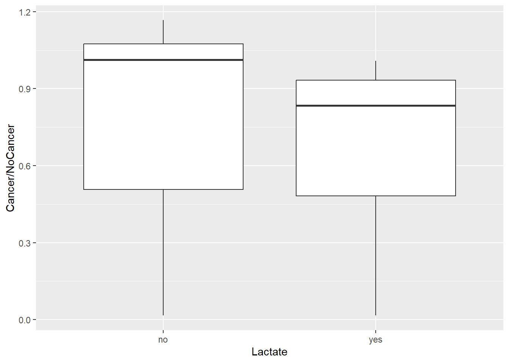
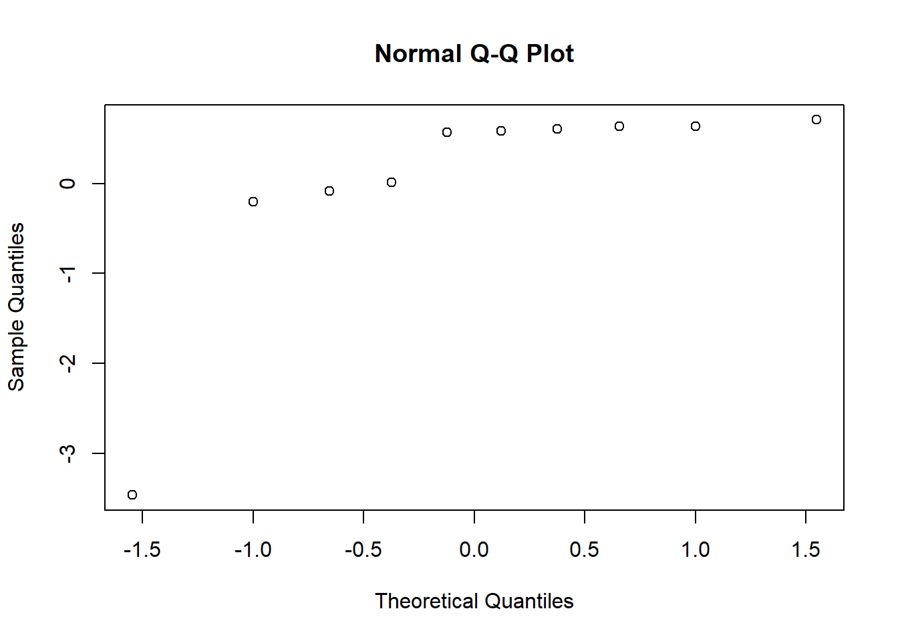
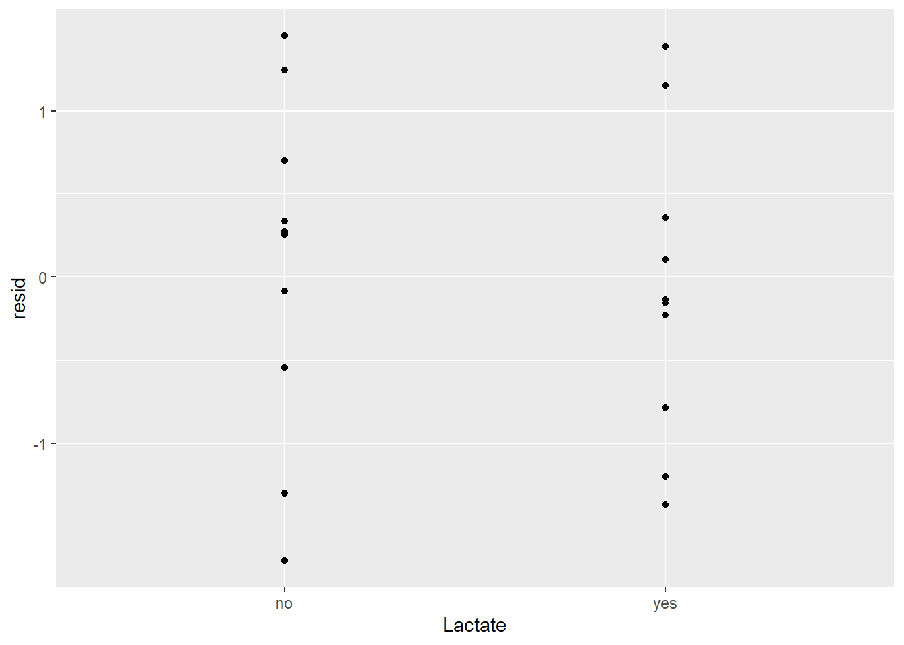
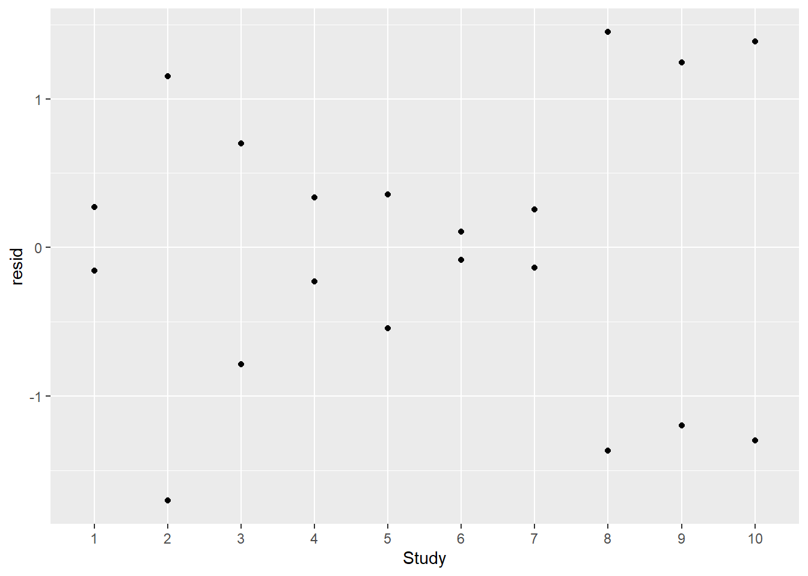
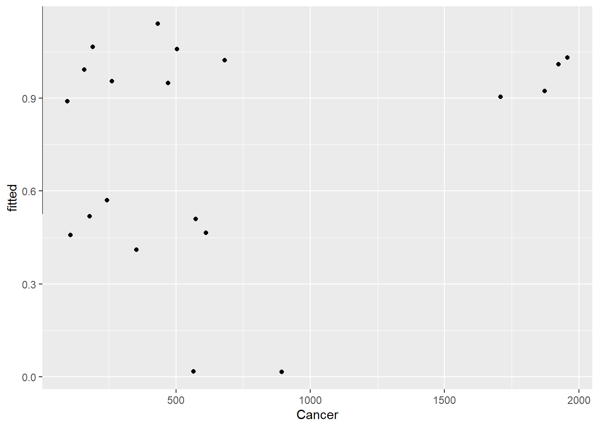
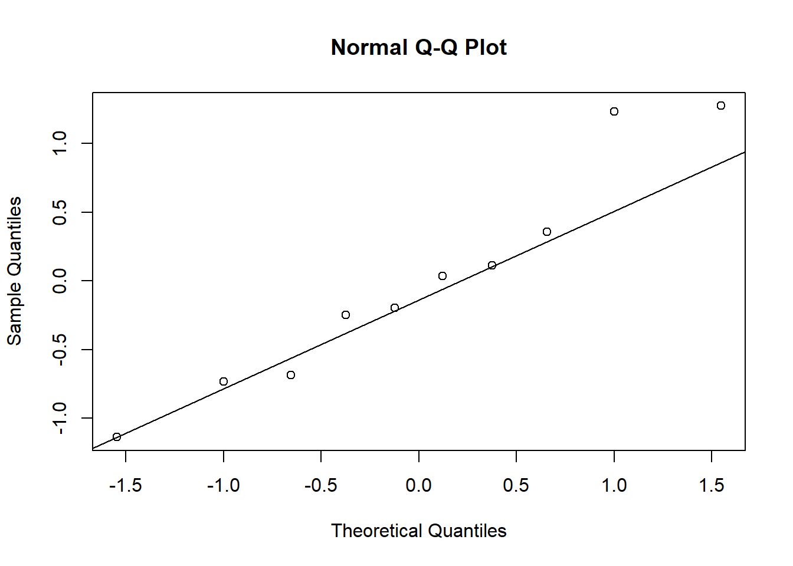
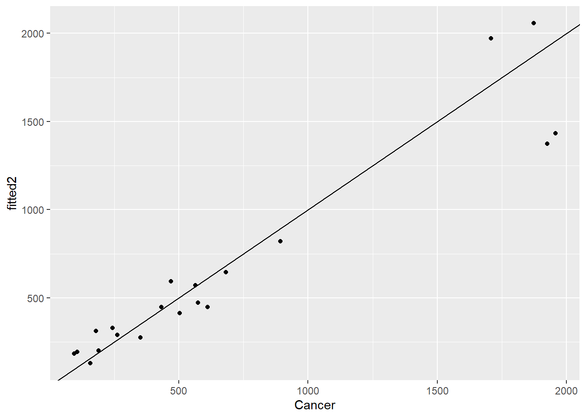
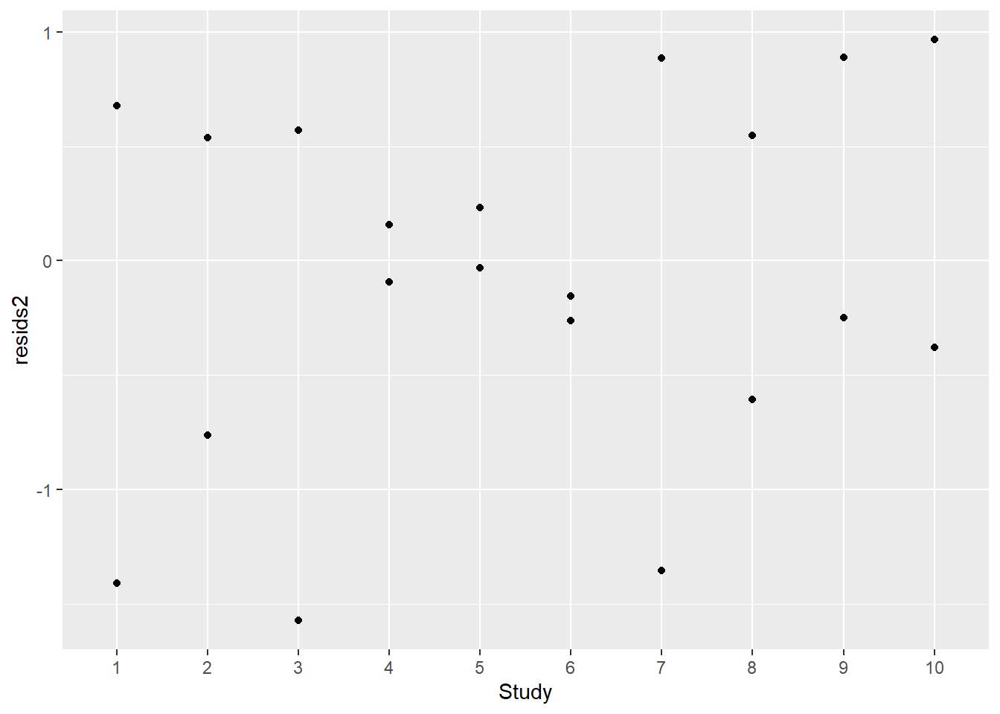
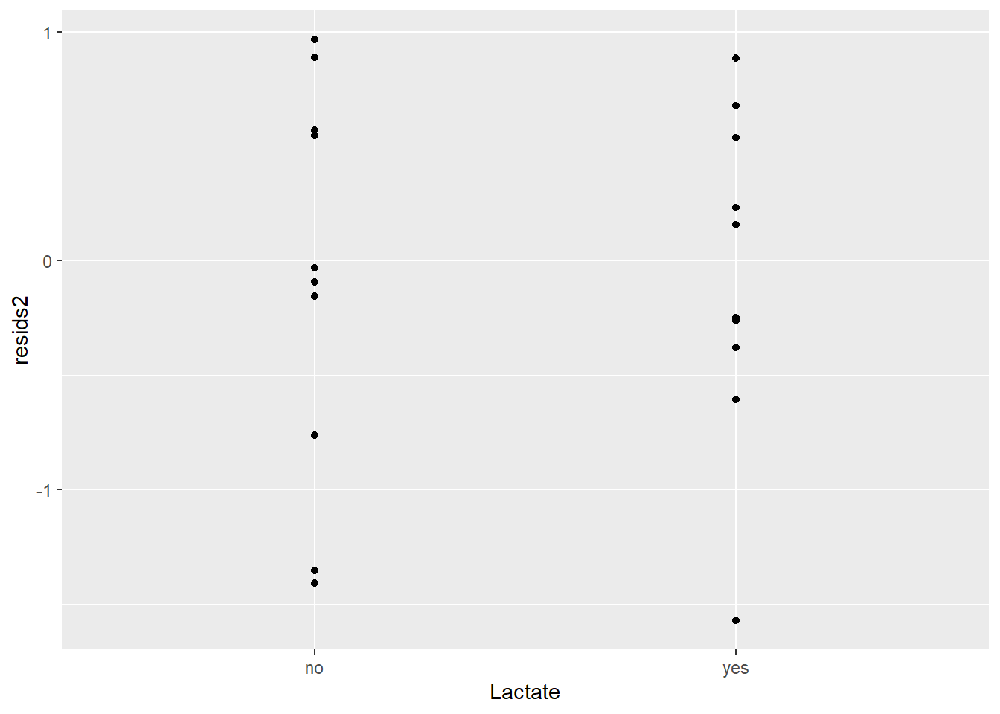

data(ex2119)
df <- ex2119
# str(df)ST-518 HW 7
output: pdf_document
R Question
1. ex2119 in the Sleuth3 library
(5 points) Recall the data in ex2119 in the Sleuth3 library. These data record results from 10 different studies in which the relationship between breast cancer and whether or not a woman had breast fed her child(ren) was examined. Earlier in the course, you looked at these data, and treated study as a fixed effect. Another way to consider these data is by taking study to be a random effect.
df2 <- df |> mutate(Study = factor(Study))
str(df2)'data.frame': 20 obs. of 4 variables:
$ Study : Factor w/ 10 levels "1","2","3","4",..: 1 1 2 2 3 3 4 4 5 5 ...
$ Lactate : Factor w/ 2 levels "no","yes": 1 2 1 2 1 2 1 2 1 2 ...
$ Cancer : int 107 352 244 574 158 95 433 682 565 894 ...
$ NoCancer: int 226 865 489 1059 147 119 371 676 32693 55735 ...(a) Fit an appropriate GLMM
Fit an appropriate GLMM to the breast cancer data, using study as a random effect. Report the estimated random effect variance and the fixed effect estimate for the Lactate variable, as well as its standard error.
Poisson is count per area or time. I am not sure if count per study works. Binomial is yes or no.
ggplot(df) +
aes(Lactate, Cancer/NoCancer) +
geom_boxplot()
mod1 <- glmer(cbind(Cancer,NoCancer)~Lactate + (1|Study),
family = "binomial",
data = df2)
summary(mod1)Generalized linear mixed model fit by maximum likelihood (Laplace
Approximation) [glmerMod]
Family: binomial ( logit )
Formula: cbind(Cancer, NoCancer) ~ Lactate + (1 | Study)
Data: df2
AIC BIC logLik deviance df.resid
248.5 251.5 -121.2 242.5 17
Scaled residuals:
Min 1Q Median 3Q Max
-1.69254 -0.60223 0.01219 0.44225 1.44836
Random effects:
Groups Name Variance Std.Dev.
Study (Intercept) 1.438 1.199
Number of obs: 20, groups: Study, 10
Fixed effects:
Estimate Std. Error z value Pr(>|z|)
(Intercept) -0.57534 0.37980 -1.515 0.13
Lactateyes -0.10958 0.02303 -4.758 1.95e-06 ***
---
Signif. codes: 0 '***' 0.001 '**' 0.01 '*' 0.05 '.' 0.1 ' ' 1
Correlation of Fixed Effects:
(Intr)
Lactateyes -0.036Report:
- the estimated random effect variance: 1.438
- the fixed effect estimate for the Lactate variable: -0.10958
- as well as its standard error: 0.02303
(b) Normal probability plot
Create a normal probability plot of the random effects. Do you notice anything unusual?
qqnorm(unlist((ranef(mod1)$Study)))
It’s not linear.
(c) A few sentences
Write a few sentences about how you might proceed with an analysis from here. There are several different approaches you could take
The normality plot is nonlinear. It appears there is at least one large outlier. I would run a model
df2$resid <- residuals(mod1)
df2$fitted <- exp(predict(mod1))ggplot(df2, aes(Lactate, resid)) +
geom_point()
ggplot(df2, aes(Study, resid)) +
geom_point()
ggplot(df2, aes(Cancer, fitted)) +
geom_point()+ geom_abline()
mod2 <- glmer.nb(Cancer~Lactate + (1|Study),
data = df2)
summary(mod2)Generalized linear mixed model fit by maximum likelihood (Laplace
Approximation) [glmerMod]
Family: Negative Binomial(7.3181) ( log )
Formula: Cancer ~ Lactate + (1 | Study)
Data: df2
AIC BIC logLik deviance df.resid
294.8 298.8 -143.4 286.8 16
Scaled residuals:
Min 1Q Median 3Q Max
-1.28447 -0.41203 -0.06147 0.59074 1.08430
Random effects:
Groups Name Variance Std.Dev.
Study (Intercept) 0.6325 0.7953
Number of obs: 20, groups: Study, 10
Fixed effects:
Estimate Std. Error z value Pr(>|z|)
(Intercept) 5.9922 0.2789 21.483 <2e-16 ***
Lactateyes 0.3621 0.1719 2.107 0.0351 *
---
Signif. codes: 0 '***' 0.001 '**' 0.01 '*' 0.05 '.' 0.1 ' ' 1
Correlation of Fixed Effects:
(Intr)
Lactateyes -0.311qqnorm(unlist((ranef(mod2)$Study)))
qqline(unlist((ranef(mod2)$Study)))
df2$resids2 <- residuals(mod2)
df2$fitted2 <- exp(predict(mod2))ggplot(df2,aes(Cancer,fitted2)) + geom_point() + geom_abline()
ggplot(df2,aes(Study,resids2)) + geom_point()
ggplot(df2,aes(Lactate,resids2)) + geom_point()
Conceptual Questions
2. true or false
(3 points) Please answer true or false to the following. Explain/justify your answers.
- One reason for using a mixed effects model is to account for the similarities among observations that are clustered together in groups.
True
- If a GLMM does not converge in R, we should just go back to using a GLM approach.
False
- If an estimated random effect variance is small, that???s an indication that we don???t need that random effect in the model.
True
3. short paragraph
(2 points) Consider the following R output from fitting a GLMM to the Donner party data (???Donner??? in the ???vcdExtra??? package) using ???family??? as a random effect.
Generalized linear mixed model fit by maximum likelihood (Laplace Approximation) [glmerMod]
Family: binomial ( logit )
Formula: survived ~ age + sex + (1 | family)
Data: Don
AIC BIC logLik deviance df.resid
116.1 126.1 -54.1 108.1 86
Scaled residuals:
Min 1Q Median 3Q Max
-2.3824 -0.6896 0.3774 0.6315 1.7398
Random effects:
Groups Name Variance Std.Dev.
1
family (Intercept) 0.6738 0.8209
Number of obs: 90, groups: family, 10
Fixed effects:
Estimate Std. Error z value Pr(>|z|)
(Intercept) 1.73785 0.62108 2.798 0.00514 **
age -0.03452 0.01632 -2.115 0.03445 *
sexMale -1.21847 0.54514 -2.235 0.02541 *
---
Signif. codes: 0 ?***? 0.001 ?**? 0.01 ?*? 0.05 ?.? 0.1 ? ? 1Write a short paragraph that describes the results from fitting this model.